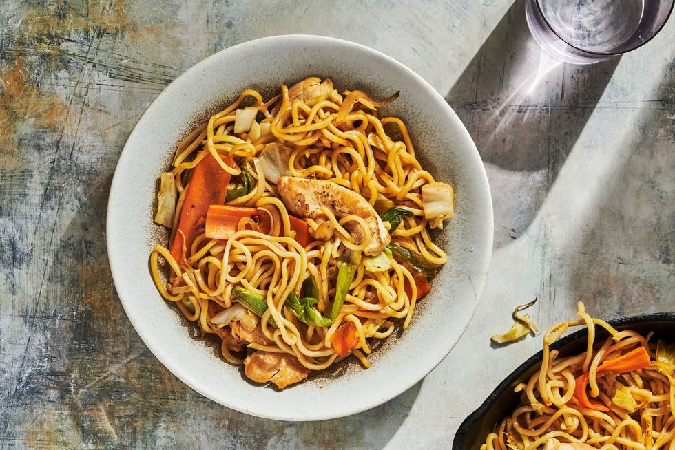

Yakisoba Recepie

Description:
Prep:
15 mins
Cook:
15 mins
Total:
30 mins
Servings:
4
Yield:
4 servings
Ingredients
- 6 ounces frozen udon noodles
- 1 tablespoon olive oil
- ½ pound boneless chicken breasts, cut into thin strips
- ½ onion, sliced
- ½ red bell pepper, sliced
- ½ cup shredded cabbage
- ½ cup carrot matchsticks
- 1 teaspoon minced garlic
- 2 tablespoons soy sauce, or more to taste
- 1 tablespoon gochujang (Korean chile paste)
- 1 tablespoon ketchup
- salt and ground black pepper to taste
Steps
- Bring a large pot of lightly salted water to a boil.
- Cook udon in boiling water, stirring occasionally, until noodles are tender yet firm to the bite, 10 to 12 minutes.
- Drain noodles and rinse with cold water.
- Meanwhile, warm olive oil in large saucepan or wok over medium heat
- and saute until cooked through, 3 to 4 minutes.
- Add onion, bell pepper, cabbage, carrots, and garlic.
Cook for 3 to 4 minutes, allowing vegetables to maintain most of their crispness.
- Pour soy sauce over vegetables and chicken; saute 1 to 2 minutes more. Add udon noodles and toss well.
Mix in gojuchang and ketchup, thoroughly combining to mix all the flavors. Season with salt and pepper.
- Itadakimasu
Return to top
Return to main page